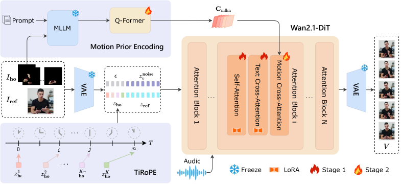
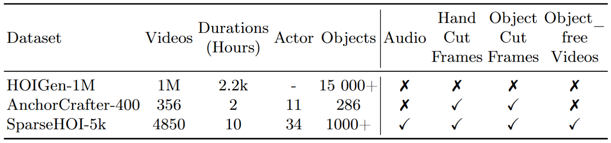
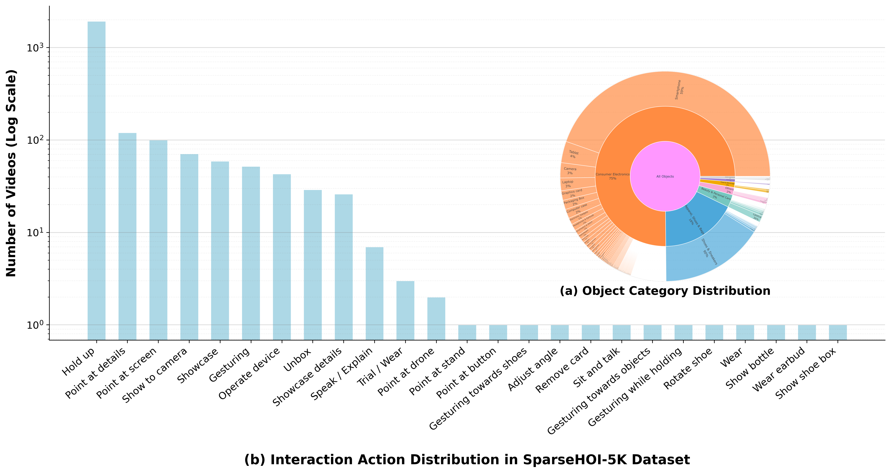
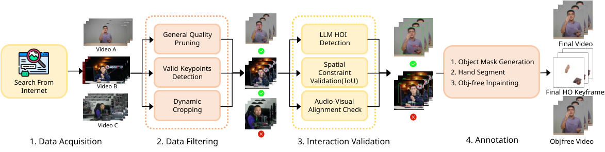

Human-Object Interaction (HOI) video generation aims to synthesize realistic videos of humans manipulating diverse objects, serving as a promising avenue for AI-driven live streaming e-commerce. A primary obstacle in this domain lies in the complexity of modeling fine-grained physical dynamics and the intricate spatial-temporal coordination between human hands and objects. Existing approaches to this problem typically rely on dense temporal guidance, e.g., frame-wise hand-object pose sequences, to strictly control the interaction process. However, such dense guidance incurs high annotation costs and affects motion synthesis diversity. To overcome these limitations, we introduce SparseCtrl-HOI, a novel sparse temporal control framework for HOI video generation. It requires only a few keyframes that capture interaction states at designated timestamps. Specifically, we employ a Time-Controlled Rotary Positional Embedding (TiRoPE) mechanism to temporally anchor these keyframes while preserving their spatial integrity. Subsequently, to govern the dynamics across intermediate frames, we propose a Motion Prior Injection Module that leverages Multimodal Large Language Models (MLLMs) to extract high-level motion priors. This empowers the model to hallucinate logically and physically plausible transitions. Furthermore, we build SparseHOI-5K, a high-quality and richly annotated dataset for HOI video generation with sparse temporal control. Comprehensive evaluations confirm that our method substantially reduces annotation overhead while synthesizing superior live-streaming e-commerce videos.

Figure 1: The overall framework of our SparseCtrl-HOI. We adopt a two-stage training strategy built upon the Wan2.1-DiT backbone. Given a reference image $I_\mathrm{ref}$, an audio sequence, and sparse interaction keyframes $I_\mathrm{ho}^{1}, \ldots, I_\mathrm{ho}^{K}$ at specified timestamps, the pipeline operates as follows. Motion Prior Encoding (Top): A frozen Qwen2.5-VL extracts high-level motion semantics from the prompt and keyframes. These are then compressed by a Q-Former into motion prior tokens $\mathbf{C}_\mathrm{mllm}$. Main Pipeline: Visual inputs are encoded by a frozen VAE. We concatenate these latents to $\mathbf{z}_\mathrm{in}$. Furthermore, the TiRoPE mechanism is applied to $\mathbf{z}_\mathrm{ho}$. Within the DiT blocks, we inject LoRA into the Self-Attention and Text Cross-Attention layers (Stage 1), and introduce a novel Motion Cross-Attention layer (Stage 2) in each block to integrate the $\mathbf{C}_\mathrm{mllm}$ tokens, enabling coherent, human-object interaction video generation.

Table 1: Comparisons between SparseHOI-5K and existing public HOI datasets. “–” indicates that the value is not reported in the official release. Hand Cut/Obj. Cut denote cropped hand/object regions; Obj-free denotes object-removed videos via inpainting.

Figure 2: More details of SparseHOI-5K dataset.

Figure 3: An overview of SparseHOI-5K dataset collection pipeline.
@inproceedings{xie2026sparsectrl,
title = {{SparseCtrl-HOI}: Sparse Temporal Control for Human-Object Interaction Video Generation},
author = {Xie, Shenbo and Cai, Mingrui and Yang, Xu and Liu, Yifei and Ding, Changxing},
booktitle = {Computer Vision -- ECCV 2026},
series = {Lecture Notes in Computer Science},
volume = {17012},
pages = {539--557},
year = {2026},
publisher = {Springer, Cham},
doi = {10.1007/978-3-032-37044-0_30},
url = {https://doi.org/10.1007/978-3-032-37044-0_30}
}